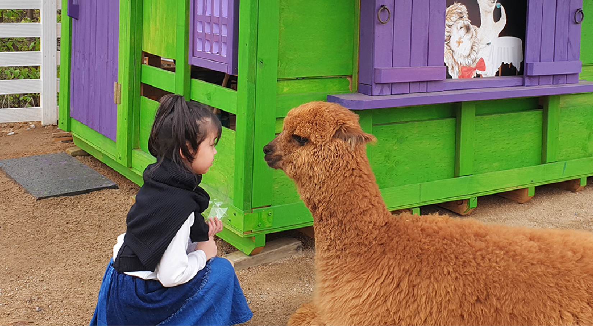
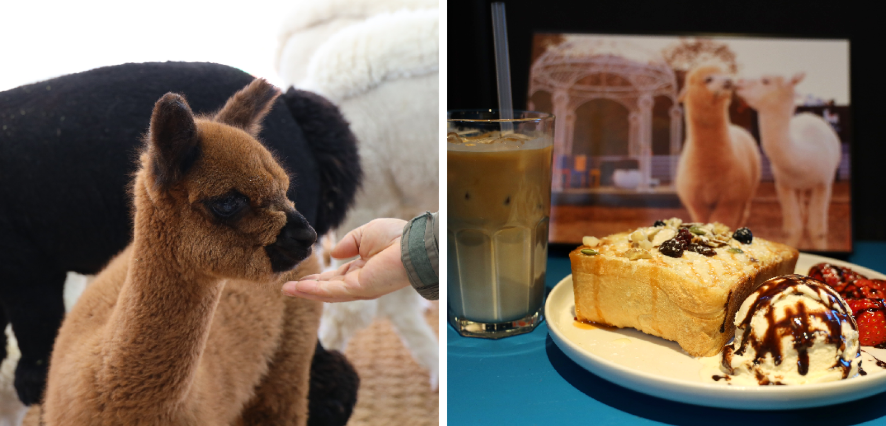
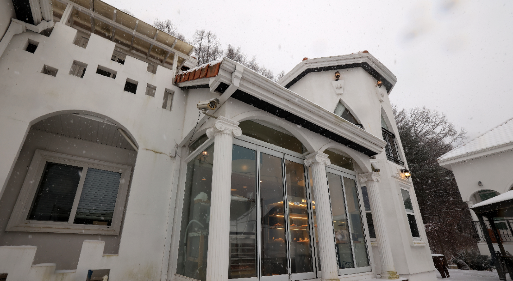
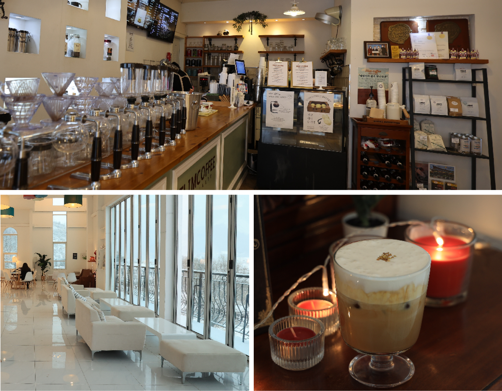

평창여행을 계획하면 한 번쯤 목장이나 농장을 여행의 코스로 찾아본 적이 있을 것이다. 하지만 시간상의 문제나 방문이 힘들어 굳이 방문하지 못한 사람들이 주목해야 하는 곳이 바로 알파카 카페 마추픽추이다.
이곳의 가장 큰 장점을 꼽자면 바로 입장료이다. 입장료와 먹이 체험 비용 그리고 음료를 별도로 주문해야 하는 다른 곳들과 달리 방문 인원에 맞게 음료만 주문한다면 입장료는 무료이다. 먹이 주기 체험을 원한다면 자판기에서 편리하게 구매할 수 있다.
아이들을 위해 방문하고 싶지만 온 가족의 입장료가 부담되는 상황을 면할 수 있고 아이들은 마음껏 알파카와 교감하며 먹이주기 체험 등을 할 수 있고, 부모님들은 편하게 음료를 마시며 여유를 즐길 수 있다. 뿐만 아니라 이곳의 알파카들은 우리에 갇혀 일방적으로 사람들의 먹이를 받아먹는 것이 아니라 직접 가까이 다가가 알파카를 쓰다듬고 먹이를 주는 체험을 할 수 있다.
이는 다른 곳들과는 다르게 동물은 우리 안에 가둬두고 보는 것이 아니라 아이들이 직접 만지고 교감하며 동물을 대하는 법을 배울 수 있게 해둔다. 이런 경험들이 아이들과 동물들의 정서적인 교감을 도와준다.
깨끗하게 관리가 잘 되어있는 알파카들을 눈 앞에서 보고 손 끝에 닿는 경험은 물론 동물을 사랑하고 배려하는 마음까지 배울 수 있는 일석이조의 교육 기회가 되어줄 것이다. 귀여운 알파카의 부드러운 촉감에 한 번 반하고 알파카를 보고 즐거워하는 사람들의 모습에 두 번 반하는 알파카의 천국 마추픽추. 귀여운 알파카를 직접 보고 느끼고 싶다면 마추픽추에서 알파카와 여유롭고 행복한 시간을 보내길 추천한다.
송정천을 끼고 자리 잡은 엘림커피는 아름다운 풍경과 향긋한 커피향이 머물러 있는 곳이다. 카페 입구에서 주문을 하러 가기 전부터 아름다운 건물과 카페에서 바라본 송정천의 풍경에 반해 한참을 둘러보다 보면 커피향을 따라 카페 카운터에 도착해 있을 정도이다.
이 카페가 가진 매력은 단순히 아름다운 건축만은 아니다. 깊고 진한 커피의 맛과 엘림커피에서만 맛볼 수 있는 메밀과 커피가 브랜딩 된 메밀크림 라떼와 메미리카노 같은 시그니처 메뉴와 디저트가 사람들의 발걸음을 끌어들이기에 충분하다.
카페에는 실내외 좌석이 모두 준비되어 있어서 계절과 날씨에 따라 좌석을 선택하면 된다. 실내에도 창문이 많아 내리쬐는 햇볕을 느끼기에 충분하지만 맑은 날 방문했다면 꼭 야외 테라스 좌석에 앉아 커피를 한잔하면서 날씨를 즐기는 여유를 가져보길 바란다. 카페가 가진 풍경에 한 번 반했다면 이제 커피 맛을 볼 차례이다. 다른 프랜차이즈 커피와는 달리 이곳엔 다양한 종류의 드립커피도 있다. 커피 마니아라면 자신의 취향에 맞게 향긋한 커피를 즐길 수 있을 뿐만 아니라 마음에 드는 원두를 구매할 수 도 있다.
또 커피와 어울리는 다양한 디저트도 준비되어 있다. 강원도 지역 색이 담긴 감자빵이나 커피콩빵도 있고 소금빵과 휘낭시에 처럼 커피에 찰떡궁합인 빵종류가 준비되어 있다. 맛있는 커피와 디저트를 즐기고 카페를 떠나기 전 꼭 들러야 하는 곳이 있다. 바로 벽화로 그려진 천사 날개 포토존이다. 아름다운 뷰로 눈을 즐겁게 하고 커피와 빵으로 입을 즐겁게 해주었다면 여행의 꽃인 사진을 남기며 완벽한 코스를 마무리할 수 있다. 눈과 입이 모두 즐거운 엘림커피, 커피를 좋아한다면 꼭 방문해 보기를 추천한다.
